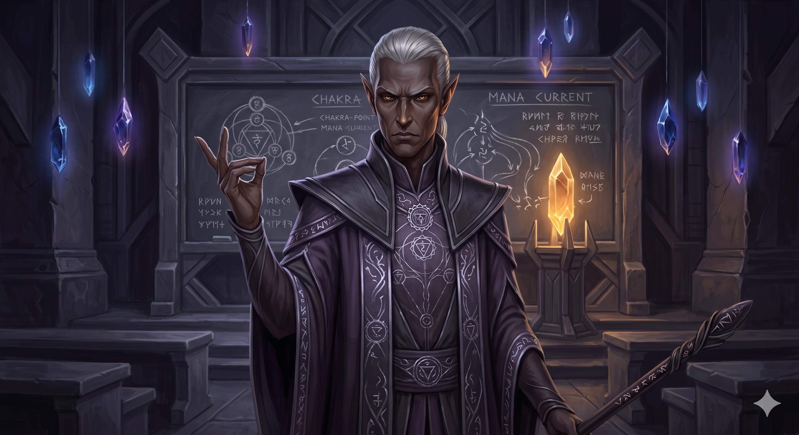

Appears in: - Aliases: Savik, the High Magus
Profile

- Appears in:
- Aliases: Savik, the High Magus
- Role: High magus of the dark-elven city-state of Gothmër; [Princess Kiwi](./character-princess-kiwistafel-questgiver.html)'s magic instructor
- Personality: Savik is a proud, exacting dark-elven magus whose professional competence is matched only by his racial prejudice. He carries the deep-seated resentment common among dark elves who view high elves as interlopers and cultural diluters — and being ordered to teach one of their royalty as though he were a common tutor is a personal affront he neither forgives nor forgets. His instructional manner is demanding, uncompromising, and deliberately unsympathetic: he teaches dark-elven chakra techniques to a student whose physiology is ill-suited to them, not out of ignorance of the difficulty but because making a high elf struggle with dark-elven methods satisfies something in him. He is not cruel for cruelty’s sake — he genuinely believes the chakra purification method is superior magic — but he takes a grim satisfaction in Kiwi’s struggles that goes beyond pedagogical frustration. His pride in Gothmër’s magical traditions is sincere, and he would consider producing an incompetent student a greater disgrace than producing an unhappy one. What keeps him from outright refusal is likely political: the cross-cultural arrangement between Brightwind and Gothmër that placed Kiwi in his care represents diplomacy between high-elven and dark-elven polities, and Savik’s compliance — however grudging — suggests he answers to authority above his personal feelings.
- Backstory: Savik rose to become high magus of Gothmër, the dark-elven city-state, presumably through mastery of the arcane traditions his people have cultivated for centuries. The dark elves of Etheria developed mana purification through chakra points — a technique taught to their children from a young age — as a core discipline that amplifies spell effects far beyond what raw mana alone can achieve. As high magus, Savik would have been responsible for safeguarding and advancing this tradition. At some point, a cross-cultural diplomatic arrangement placed Princess Kiwistafel Questgiver — a high elf, daughter of King Iolo — under Savik’s instruction in Gothmër. For a dark-elven magus of his rank, being told to train a high-elven princess in arts considered culturally proprietary would have been deeply humiliating: the equivalent of a master craftsman forced to apprentice the child of a rival dynasty. That Kiwi’s physiology as a high elf made the chakra techniques inherently more difficult only compounded the frustration — she struggled with methods that dark-elven children mastered young, and every failure confirmed Savik’s belief that she did not belong in his academy.
- Significant story events:
- Kiwi’s Training in Gothmër (referenced in Chapter 27): Savik’s primary story presence is through Kiwi’s backstory. His instruction in mana purification through chakra points forms the basis of Kiwi’s magical education — education she carries into the orb quest, where her ability to channel mana effectively proves crucial. The racial tension of their relationship is explicitly noted: he resented teaching a high elf, and she struggled with his techniques.
- Chapter 27 — [Mad Marina](./character-mad-marina.html) and the Phantom Child (Chaos): The mana purification and chakra point system is explained in this chapter, establishing the magical framework that Savik taught Kiwi and that distinguishes dark-elven magic from other traditions.
- Notable Quotes:
[No direct quotes from Savik are recorded in the wiki. His most significant contribution to the narrative is through Kiwi’s backstory — the friction of their teacher-student relationship and the magical techniques he imparted. Any direct dialogue would need to be sourced from Chapter 27 of Couch Potato Chaos.]
- Relationships:
- Princess Kiwistafel (Kiwi): Student. Their teacher-student relationship was strained by racial tension — he resented teaching a high elf, and she struggled with his dark-elven chakra techniques. Despite the friction, Kiwi emerged from his instruction with functional (if imperfect) mana purification skills that served her throughout the orb quest.
- [King [Iolo Questgiver](./character-iolo-questgiver.html)](./character-iolo-questgiver.html): The political authority behind Kiwi’s placement in Savik’s care. The cross-cultural arrangement that sent a high-elven princess to study under a dark-elven magus represents diplomacy between Questgivria and Gothmër, with Savik as the professionally compromised party.
- Gothmër: His city-state and the seat of his authority as high magus. Savik’s identity is deeply tied to Gothmër’s magical traditions and its dark-elven cultural heritage.
- References: Couch Potato Chaos: Chapter 27 - [Mad Marina](./character-mad-marina.html) and the Phantom Child, Characters